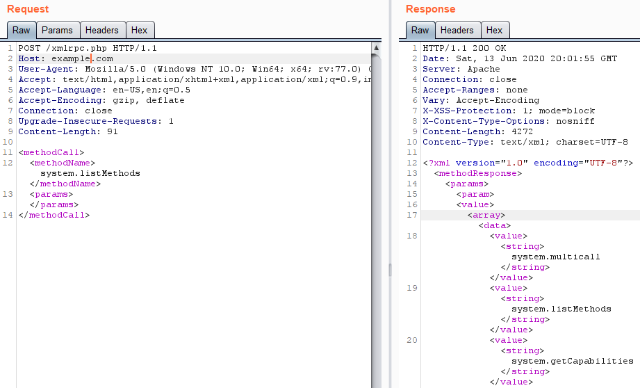

Remote Procedure Call (RPC)
Old protocol of 1980s. Each request is mapped to a function
Two types of RPC:• XMLRPC → data in XML doc
• JSONRPC → data JSON string
RPC methods• PUT
• POST
Bibliography:Bug Bounty Playbook 2 (Alex Thomaz, Ghostlulz)